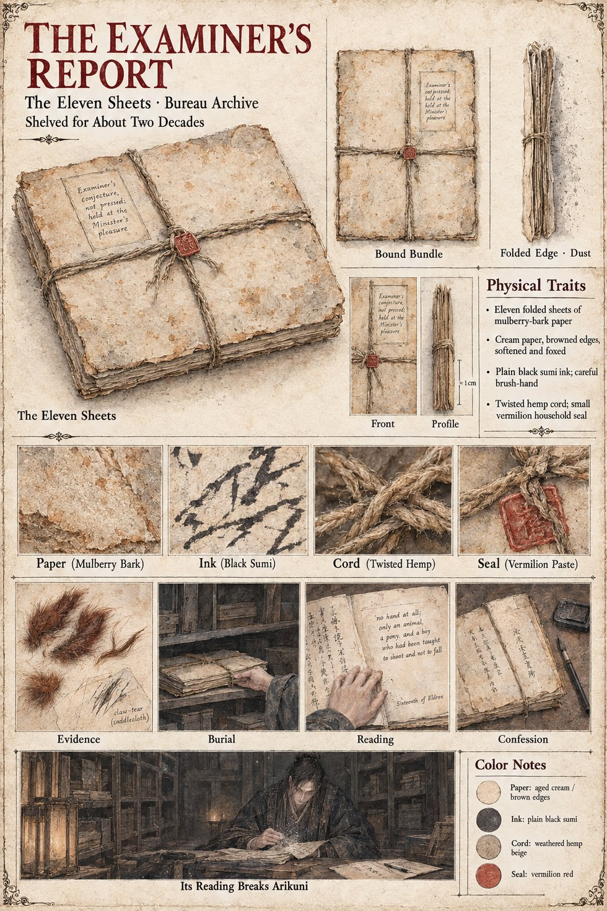

The Examiner's Report
Object · eleven folded sheets, the Bureau of Inquiry's report on the death of Kiyomaro · written 16 Eldren · shelved in the lower archive, not pressed
Eleven sheets in a plain black brush-hand, the work of Yasutsugu between the thirteenth and the sixteenth of Eldren, from the first paragraph, which concerns the pony, to the last, which concerns the cat. Its finding, entered on the sixteenth, is that there was no hand at all: only an animal, a pony, and a boy who had been taught to shoot and not to fall. Its evidence is a scrap of chestnut hair and three tufts of russet fur from the grass at the starting-line, and a pulled thread and a tiny claw-tear on the saddlecloth. It goes to the steward of the Minister's household, Tamenaga, who reads it twice, understands it perfectly, and lays it in a cabinet with the words Examiner's conjecture, not pressed; held at the Minister's pleasure on its cover, the cord sealed with the small seal of the household that no Examiner of the Bureau has ever been known to break. The Bureau's archive takes it from there, to lie three shelves from the floor under a layer of dust that a single visitor will remark on.
Everything the Law does in its second life is built across the place where it would have gone. The summons served to Higaide says that the Bureau has entered no finding to excuse him; the Fifth Article, as the manuscript words it, lets a Bureau finding of no hand excuse the signatory, and nothing in the Law requires that the finding be read. Observer 618 reads the report at the archive shelf with his instruments the day before the ordeal and confirms that the subject is innocent. In the fifth winter Arikuni breaks the seal and reads it twice, and it is the line about the three tufts of russet fur that undoes him. He copies the eleven sheets out in his own hand, signs a sentence of confession beneath the last, and pastes the copy into the Book of the Ordeal; the only effect it has in the Law is the clause that the new Left Minister grants in the margin, that no accused be shown the Stone until the report has been read aloud. The manuscript says that the report lies on its shelf for the better part of two decades, and also has Arikuni open it in the fifth winter; the page takes both to be so, the bundle being still on its shelf, in its dust, when the Stone comes apart.
The sheet draws the bundle front and in profile, about a centimetre thick: eleven folded sheets of mulberry-bark paper, cream with browned and foxed edges, tied crosswise with twisted hemp cord under a small vermilion seal, with close-ups of the paper, the black sumi ink, the cord and the seal. Its other panels are Evidence (russet tufts and a scrap of saddlecloth labelled claw-tear), Burial (a hand sliding the bundle onto a shelf), Reading (an open book with the words no hand at all; only an animal, a pony, and a boy who had been taught to shoot and not to fall and the date Sixteenth of Eldren), Confession (a book of closely written pages with a brush and an ink-stone) and, along the foot, Its Reading Breaks Arikuni, a dark-robed man bent over the pages in the archive. The sheets, the cover note, the cord and the household seal are the manuscript's; the paper, the ink, the vermilion and the size are the sheet's own.
“No hand at all: only an animal, a pony, and a boy who had been taught to shoot and not to fall.”
Appears In

Related Subjects


Related Records

In the lower archive of the Bureau of Inquiry Sugino no Arikuni, who has read the Examiner's eleven sheets twice, has slid from the stool to the floor with his forehead against the table, and Azuki, old and thin, comes into the lamplight to climb into his lap.